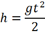

Падение телСвободное падение представляет собой частный случай равномерно ускоренного движения без начальной скорости. Ускорение этого движения равно ускорению свободного падения, называемого также ускорением силы тяжести. Для этого движения справедливы формулы: или u — скорость падения тела спустя время t Примечание:
Движение тела, брошенного вертикально вверхТело, брошенное вертикально вверх, движется равномерно замедленно с начальной скоростью u0 и ускорением a = -g. Перемещение тела за время t представляет собой высоту подъема h.Для этого движения справедливы формулы: или U0 — начальная скорость движения тела Скорость тела на некоторой высоте: Максимальная высота подъёма тела: Время подъёма на максимальную высоту: Сложение движений, направленных под углом друг к другу.Тело может одновременно участвовать в нескольких поступательных движениях. Поскольку ускорение, скорость и перемещение являются векторными величинами, их можно складывать по законам векторного (геометрического) сложения. Т.е. по правилу параллелограмма. Величину результирующей любой характеристики движения можно вычислить. Если: Если движения 1 и 2 происходят под прямым углом друг к другу, то формула упрощается поскольку Движение тела, брошенного горизонтально.Движение тела, брошенного горизонтально, представляет собой комбинацию двух движений, взаимно перпендикулярных друг другу: Уравнение траектории тела, брошенного горизонтальнЕсли построить траекторию движения тела, брошенного горизонтально, в системе координат xy, приняв за начало отсчета координат точку бросания, а направление оси ординат совпадающим с направлением вектора ускорения свободного падения, то координаты каждой точки траектории представляют собой перемещение тела в горизонтальном направлении (движение с постоянной скоростью U0) и в вертикальном направлении (равномерно ускоренное движение с ускорением g) x, y — координаты тела, Уравнение траектории тела, брошенного горизонтальновыглядит следующим образом: Так как ускорение свободного падения g и начальная скорость тела u0 — постоянные величины, то координата yпропорциональна квадрату x, т.е. траектория движения представляет собой параболу, вершина которой находится в начальной точке движения. Вектор положения тела брошенного горизонтально, формулаПоложение каждой точки траектории тела брошенного горизонтально можно задать вектором положения r, который представляет собой результирующее перемещение: или Вектор положения: Координата по оси x: Координата по оси y:  Примечание: Сопротивление воздуха в формулах не учитывается. Уравнение движения тела, брошенного под углом к горизонту.Координаты точки траектории описываются уравнениями: x, y — координаты тела Из формул через параметр t выводится общее уравнение движения тела, брошенного под углом к горизонту Так как ускорение свободного падения g, α — угол, под которым брошено тело к горизонту и начальная скорость тела u0 —постоянные величины, то координата y пропорциональна квадрату x, т.е. траектория движения представляет собой параболу, начальная точка находится на одной из ее ветвей, а вершина параболы, есть точка максимального подъема тела. Время подъема на максимальную высоту, тела, брошенного под углом к горизонту.Время подъема на максимальную высоту определяется из условия, что вертикальная составляющая мгновенной скорости равна нулю из этого уравнения получаем: U0 — начальная скорость тела (м/с), Дальность броска тела, брошенного под углом к горизонту.Дальность броска или радиус поражения определяется по формулам общего времени движения и формулы координат тела подставив tsmax в выражение и упростив получим: U0 — начальная скорость тела (м/с), |